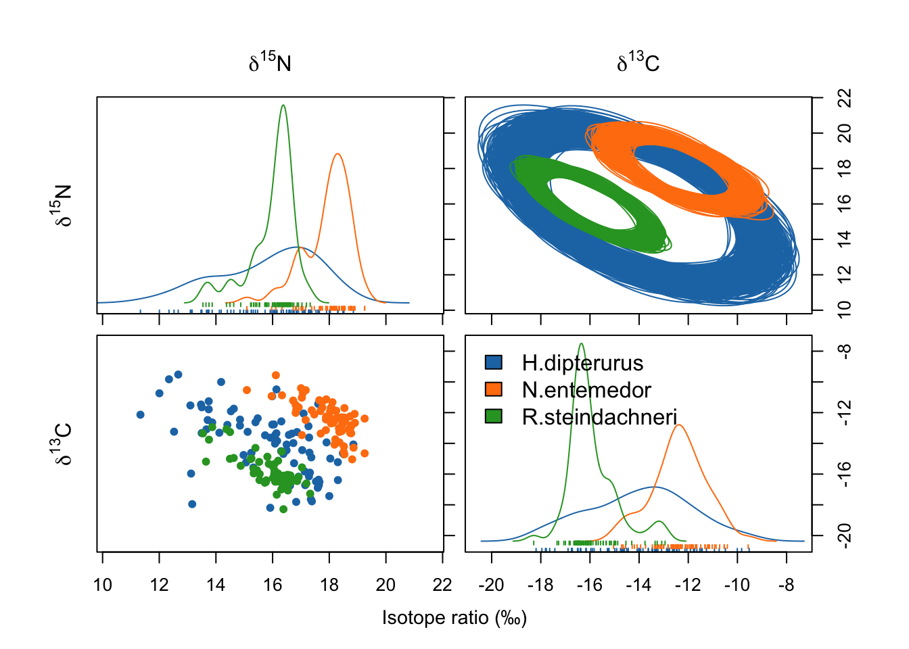
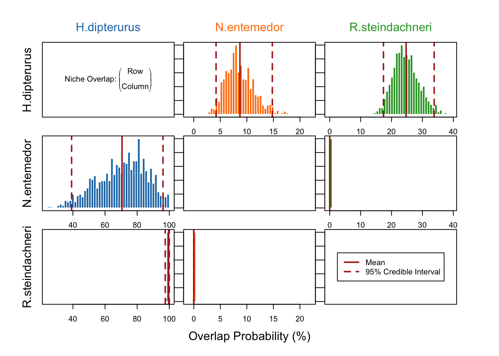

library(nicheROVER)
library(ggplot2)
library(dplyr)4 Isotopic niche overlaps
4.1 Libraries
4.2 Data
data <- read.csv("data/glm.csv", header = T)
colnames(data)[6:7] <- c("iso1", "iso2")
global <- subset(data, select = c(sp, iso1, iso2))
global$group <- factor(global$sp, labels = c(1:3))
global$community <- 1
head(global)4.3 Projections of niche regions
Basic parameters for plotting:
global_colors <- c('#1f77b4', '#ff7f0e', '#2ca02c')
xlims <- c(min(global$iso2)-0.5, max(global$iso2)+0.5)
ylims <- c(min(global$iso1)-0.5, max(global$iso1)+0.5)
species <- unique(global$sp)nicheROVER performs a Bayesian estimation of the isotopic niche and then calculates the probability of its overlap with the isotopic niche of another; i.e., how probable is to find an individual of one species in the isotopic space of another. Thus, this overlap is directional and more informative than the traditional, non-directional, geometric approximation (Swanson et al. 2015).
# Number of posterior samples
nsamples <- 1000
# Estimates of the isotopic niche
bpar <- tapply(1:nrow(global), global$sp,
function(ii) niw.post(nsamples = nsamples,
X = global[ii, 2:3]))
bdata <- tapply(1:nrow(global),
global$sp,
function(ii) X = global[ii, 2:3])Plot of the isotopic niches:
niche.plot(niche.par = bpar,
niche.data = bdata,
pfrac = 0.05,
iso.names = expression(delta^{15}*N, delta^{13}*C),
col = global_colors,
xlab = expression ("Isotope ratio (‰)"))
Mean overlaps with the means for 95% and 99% ellipses:
over.stat <- overlap(bpar,
nreps = nsamples,
nprob = 1e3,
alpha = c(0.95, 0.99))
over.mean <- apply(over.stat,
c(1:2, 4),
mean)*100
round(over.mean), , alpha = 95%
Species B
Species A H.dipterurus N.entemedor R.steindachneri
H.dipterurus NA 9 25
N.entemedor 71 NA 0
R.steindachneri 100 0 NA
, , alpha = 99%
Species B
Species A H.dipterurus N.entemedor R.steindachneri
H.dipterurus NA 14 35
N.entemedor 96 NA 0
R.steindachneri 100 0 NA95% Highest density intervals for the overlaps
over.cred <- apply(over.stat*100,
c(1:2, 4),
quantile,
prob = c(.025, .975),
na.rm = TRUE)
round(over.cred[,,,1]) # display alpha = .95 niche region, , Species B = H.dipterurus
Species A
H.dipterurus N.entemedor R.steindachneri
2.5% NA 41 98
97.5% NA 96 100
, , Species B = N.entemedor
Species A
H.dipterurus N.entemedor R.steindachneri
2.5% 4 NA 0
97.5% 15 NA 0
, , Species B = R.steindachneri
Species A
H.dipterurus N.entemedor R.steindachneri
2.5% 17 0 NA
97.5% 33 0 NAPlot with the posterior distributions of the niche overlaps:
over.stat <- overlap(bpar, nreps = nsamples, nprob = 1e3, alpha = .95)
#cairo_pdf("nicheROVER.pdf", width = 7, height = 7/1.61, family = "Times")
overlap.plot(over.stat, col = global_colors,
mean.cred.col = "firebrick",
equal.axis = TRUE,
xlab = "Overlap Probability (%)")
#dev.off()